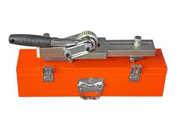

Inicio | Productos
-
Máquinas de soldadura por fusión a tope tipo manual 
Máquinas de soldadura por fusión a tope tipo hidráulico 
Máquinas de soldadura por fusión a tope tipo automático -
Máquinas de soldadura por fusión para accesorios de tubería 
Sierras de cinta -
Máquinas de soldadura por fusión para unión en T -
Sierras de cinta para corte curvo -
Máquinas de soldadura para tuberías de drenaje 
Máquinas de soldadura por electrofusión -
Registrador de datos -
Herramientas de soldadura por enchufe -
Cortadores de tubos - 
Limpiador de cordones de soldadura -
Herramienta de biselado de tubos -
Soporte con rodillos para tubos -
Máquinas de soldar de nuevo diseño -
Equipos de soldadura OEM
Máquinas de soldadura por fusión a tope tipo manual

- Máquinas de soldadura por fusión a tope tipo manual
- Máquinas de soldadura por fusión a tope tipo hidráulico
- Máquinas de soldadura por fusión a tope tipo automático
- Máquinas de soldadura por fusión para accesorios de tubería
- Sierras de cinta
- Máquinas de soldadura por fusión para unión en T
- Sierras de cinta para corte curvo
- Máquinas de soldadura para tuberías de drenaje
- Máquinas de soldadura por electrofusión
- Registrador de datos
- Herramientas de soldadura por enchufe
- Cortadores de tubos
- Limpiador de cordones de soldadura
- Herramienta de biselado de tubos
- Soporte con rodillos para tubos
- Máquinas de soldar de nuevo diseño
- Equipos de soldadura OEM
Contáctanos
ROTHENBERGER (Wuxi) Pipe Technologies Co.,LTDDirección: Surco - Lima
Tel:(01) 203-3852
Cel: +51 946 495 957
Email: ventas@termofusion.pe
Web:termofusion.pe